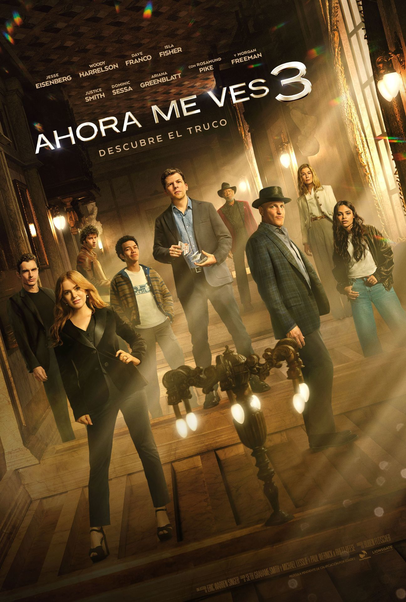
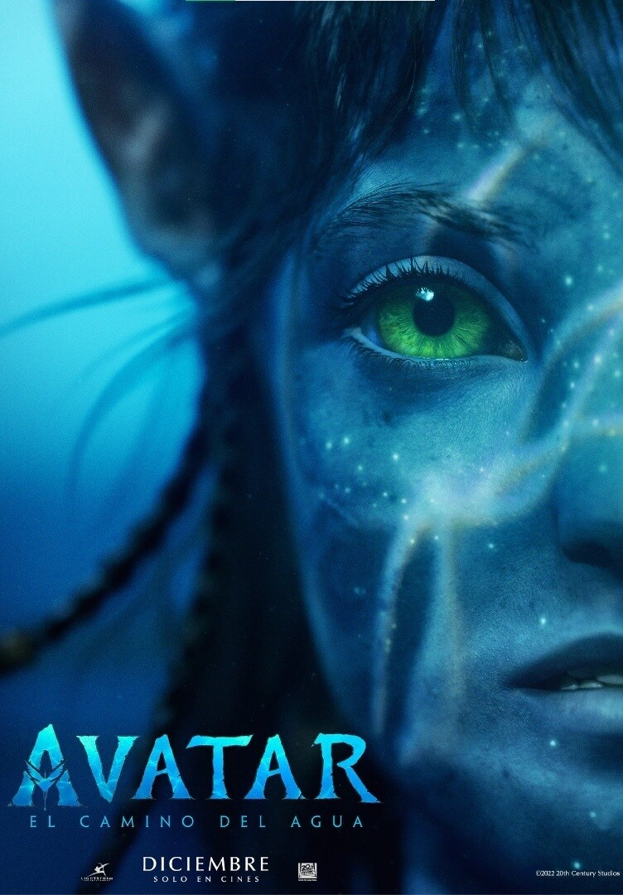
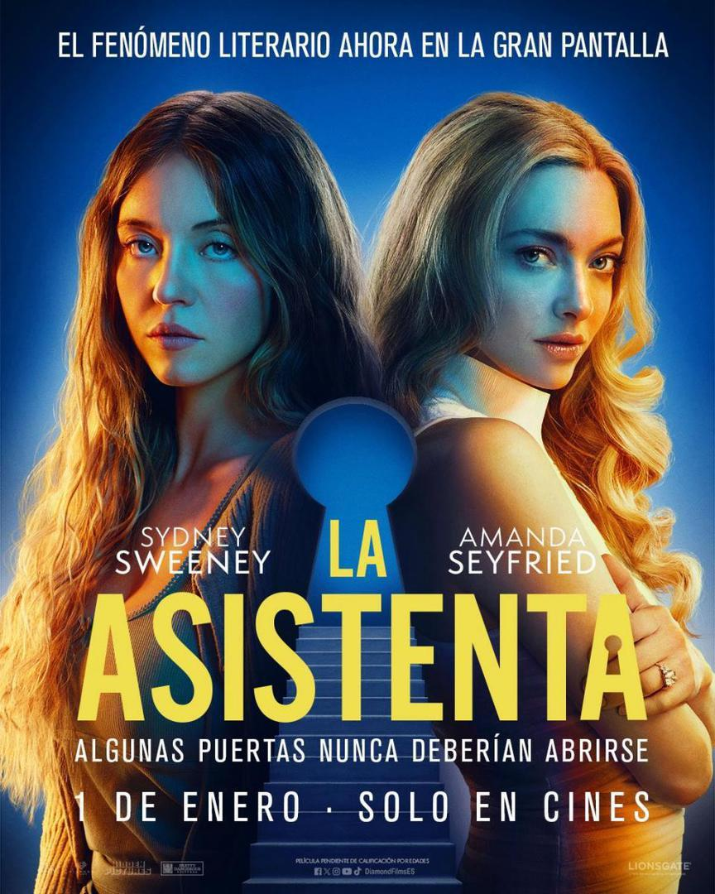

Ahora me ves
Avatar

La AsistentaEn la película, los Jinetes (Eisenberg, Harrelson, Dave Franco e Isla Fisher, que regresa) reciben un nuevo mensaje de El Ojo, la sociedad secreta de magos que se dedica a robar a los ricos para entregárselo a los pobres, y se preparan para dar su golpe más ambicioso delante de todo el planeta. La trama recorre medio mundo, pasando de Nueva York, Francia y Amberes a Sudáfrica, el desierto de Arabia y Abu Dabi, con los magos a la fuga mientras van perfilando un plan para hacerse con una joya de valor incalculable que está en posesión de una magnate de diamantes corrupta relacionada con el blanqueamiento de dinero ensangrentado y la manipulación comercial. Los Jinetes suben la apuesta y operan a mayor escala para ofrecer un nivel de espectáculo inédito. Todo lo que desaparece reaparece… más épico, más atrevido y más imprevisible que nunca. Justice Smith (Jurassic World: El reino caído), Dominic Sessa (la revelación de Los que se quedan) y Ariana Greenblatt (Barbie) interpretan a los jóvenes magos que cumplen el sueño de unirse a los Jinetes a los que tanto admiran. Rosamund Pike, protagonista de Saltburn (2023), encarna a la sucesora de un clan de magnates de diamantes millonarios cuyo poder y ambición desmedida la convierten en objetivo del nuevo y ampliado equipo de ilusionistas justicieros.
Pequeñas y crujientes, perfectas para un antojo rápido y dulce entre comidas.
Crujientes triángulos de maíz con sabor intenso y un toque de sal y especias, ideales para picar.
Papas onduladas, extra crujientes, con un sabor clásico y satisfactorio en cada bocado.
Rebanada de pan con tomate natural y un toque de orégano, lista para un snack fresco y saludable.
Pipas tostadas y saladas, un snack tradicional para disfrutar con calma o mientras haces una pausa.
Clásico y delicioso, con jamón y queso fundido, perfecto para un snack rápido y sabroso.
Relleno de vegetales frescos y crujientes, ideal para un snack ligero y saludable.
Pan integral con pavo tierno y jugoso, una opción nutritiva y saciante.
Tierna pechuga de pollo acompañada de queso suave, listo para disfrutar en cualquier momento.
Sabroso lomo de cerdo con tomate natural y pan fresco, un snack tradicional y contundente.
Cuando Millie es contratada para trabajar de interna en la mansión de Andrew y Nina Winchester todo parece de color de rosa, pero pronto la oscuridad se adueñará de todas las paredes de la magnífica casa. Los sofisticados, ideales y millonarios Winchester tienen muchas cosas que esconder, sobre todo en el desván que sirve de habitación al final de la escalera. La asistenta en su salto al cine es misterio y suspense elevados a la máxima potencia. Hay muchas sombras que recorren la película. La más alargada, la de Daphne Du Maurier y su novela Rebecca (publicada en 1938 y llevada al cine en 1940). También hay un par de enigmáticas menciones a Barry Lyndon (1975), la obra maestra de Stanley Kubrick. En el fondo, es un Grand Guignol de lujo que nos lleva encantados a los thrillers psicológicos que hicieron furor en las décadas de 1980 y 1990. Por mencionar unos pocos, hablamos de El caso de la viuda negra (Black Widow) (1987), La mano que mece la cuna (The Hand That Rocks the Cradle) (1992) o Análisis Final (Final Analysis) (1992).